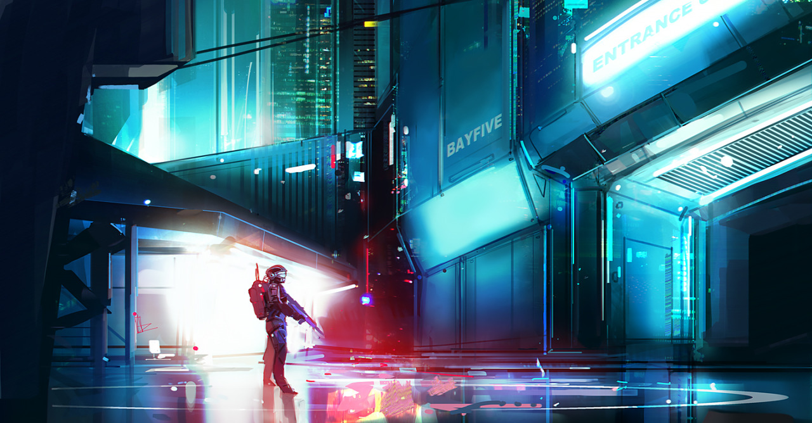
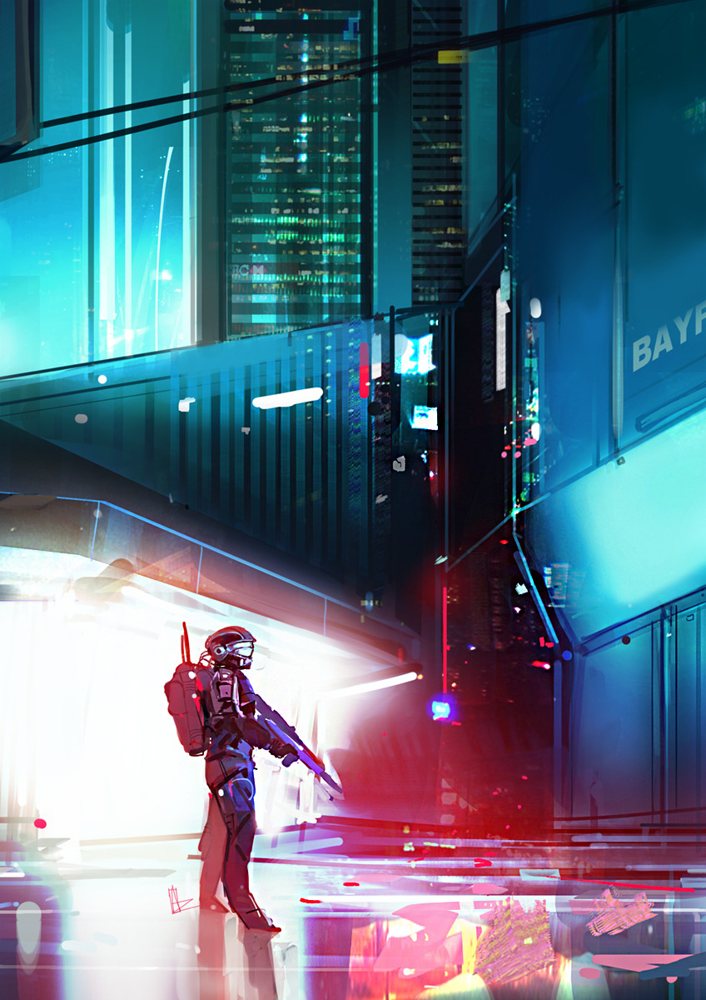

Mombassa Street : ODST
Tribute to Halo ODST ,
Im an avid player of Halo franchise and especially Halo odst , so i decided To make another fan about it and this time with more inspiration from the Game itself !
Thnx to bungie & 343 for Creating such a massive inspiration source of
Love, Art and Entertainment , Cant wait to play Halo 5 ///
Hope you all like it
Thnx for Support